EmoBox connects Momo, a tangible emotional companion, with a mobile experience for check-ins, optional activities and reflection. The design explores how AI support can offer a gentle invitation while leaving the next step to the user.
ExperienceFace, voice and touch connected with a mobile app
Project statusStudent prototype · Original Figma UI & usage demo
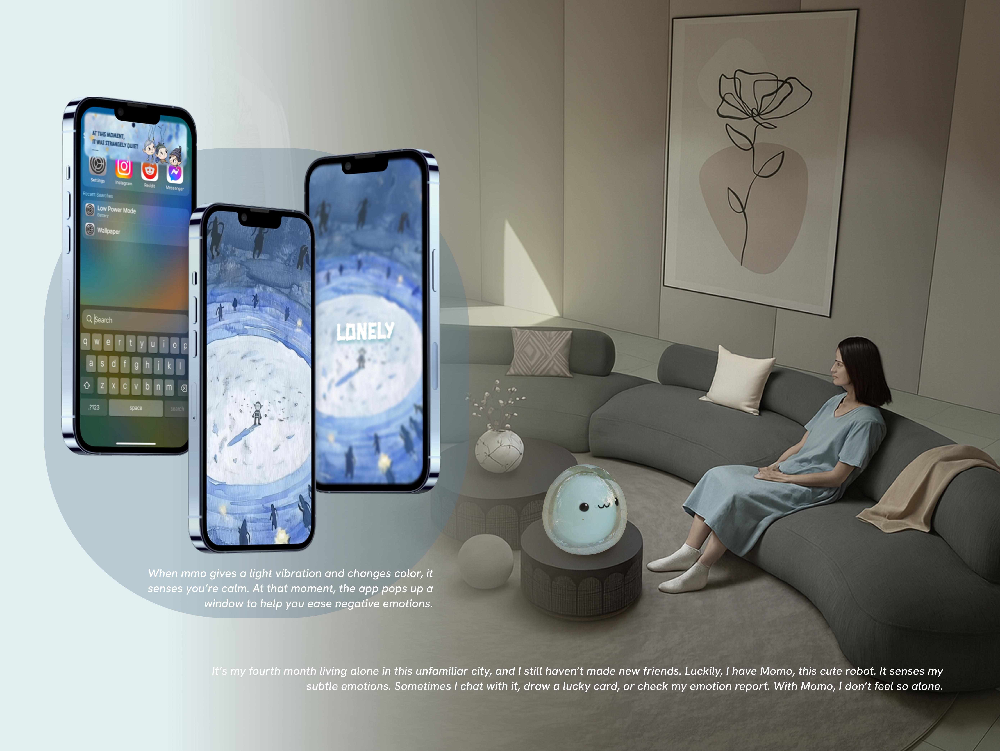
Momo in everyday life · Concept scenario and personalized mobile experience.
The opportunity
Support should not become another demand.
The original concept focuses on young people living alone who may find it difficult to express their feelings. A companion can offer a starting point—but an unwanted prompt or a rigid activity can add pressure at the wrong moment.
The central design question: how might emotional support feel approachable without taking control away from the person receiving it?
Testing & iteration
A gentle invitation. A choice to leave.
The original test board surfaced two concerns: a prompt could arrive at the wrong emotional moment, and card drawing could feel too rigid. These helped clarify what the experience needed to give back to the user: control over when to begin and when to stop.
Start quietly.
Feedback described a phone pop-up during a bad mood as making the experience feel worse. The test board proposed a slight vibration from Momo instead of immediately opening a pop-up.
The quieter cue may attract less immediate attention, but it leaves the person room to engage when ready. The intended flow begins with a small physical signal and continues into an optional phone check-in.
Let “no” be a complete response.
Another comment asked for more flexibility when the user did not want to draw a card or keep drawing. A support activity should not make completion feel compulsory.
The later flow offers choices to act, redraw or exit. Daily mode also lets people visit on their own initiative, without waiting for an emotional cue. The screens and usage demo show how these alternatives fit into the experience.
A follow-up evaluation would compare how interruptive the entry feels and whether people can decline, redraw or leave comfortably. The original feedback supports the design direction; it does not measure the effect of the revisions.
Two ways to connect
A response to your feelings. A small lift in your day.
EmoBox has two entry points. Emotion-triggered mode begins with a signal from Momo and turns it into a personalized experience. Daily mode lets the user open the app simply to draw a card and enjoy a small moment of surprise—without waiting for an emotion to be detected.
01 / Emotion-triggered mode
Notice → personalize → choose → reflect
The concept uses a detected expression cue to personalize an AI-generated emotion card; the user can draw an activity card, chat with its little spirit, and revisit their accumulated emotion report.
02 / Daily mode
Open → draw → enjoy
Draw a daily card just for a little delight. No detected emotion is required. Redraw, try the suggestion or leave whenever you want.
Emotion-triggered / 01
Detect a feeling. Invite a check-in.
The original prototype connects facial-expression cues with expressive feedback and a phone notification. Following testing, I proposed a light vibration from Momo as a quieter first invitation; the original notification flow is shown below. This creates a transition from a small physical signal to a richer digital interaction.
The notification is an invitation: the user can open it or continue their day. The personalized emotion card appears in the next step.
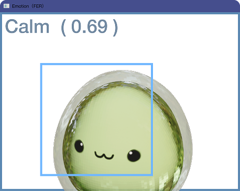
Momo detects an expression cue→
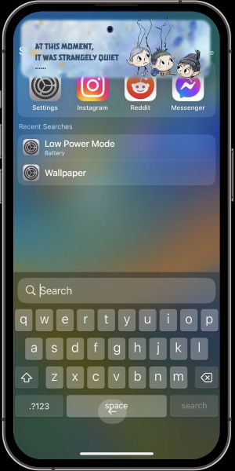
Momo senses a cue → a small notification invites a check-in.
Emotion-triggered / 02
An emotion card made for this moment.
AI generates a personalized emotion card based on the detected feeling. The illustrated scene, atmosphere and little spirit give that feeling a visual form—rather than reducing the experience to a label or a number.
The original designs explore different emotional worlds, including happiness, loneliness and feeling speechless. The card becomes the bridge between recognition and the next interaction.
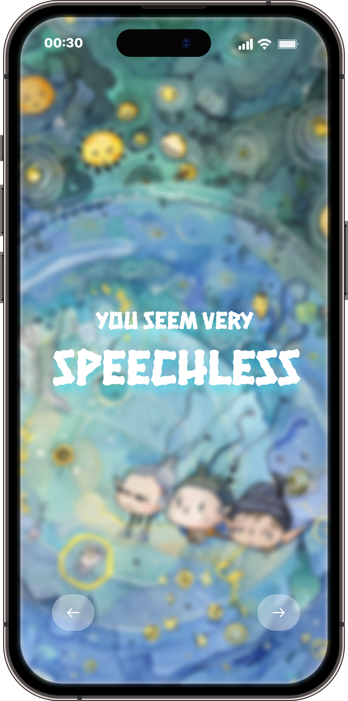
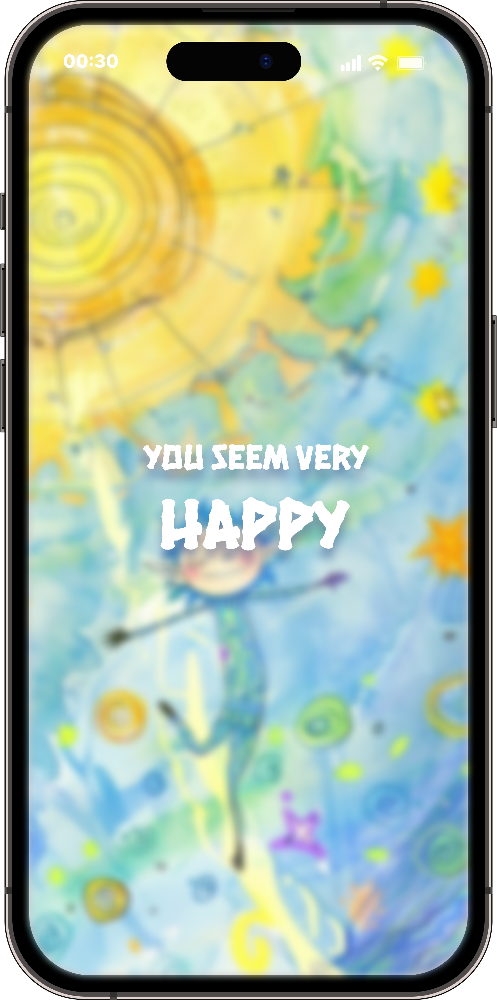
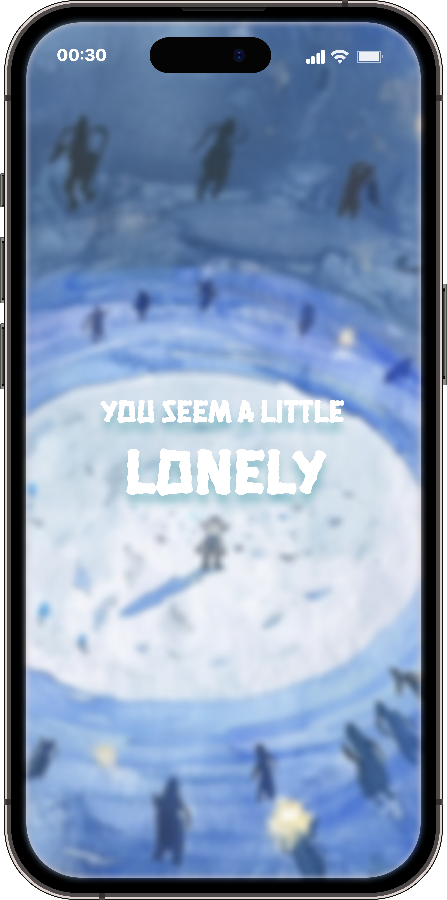
Different feelings, different visual worlds · Original card designs.
One companion. Different emotional worlds.
Tap the invitation, enter the personalized illustrated card, then reveal the emotion check-in. These looping GIFs capture the original Figma prototype transitions across five card designs.
Choose one of the face-down cards, open the selected card, and reveal a small activity suggestion. Each screen makes the next step visible, while the reveal adds a moment of curiosity.
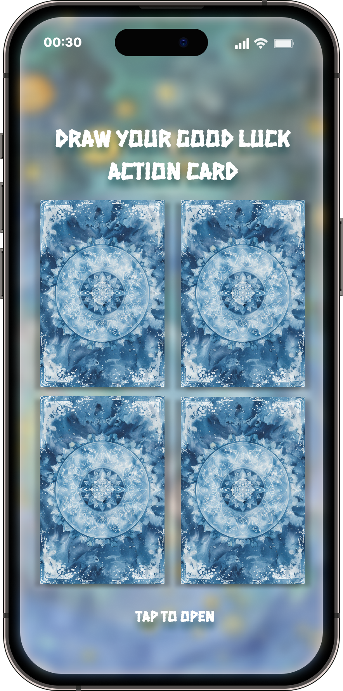
01 / Choose a card
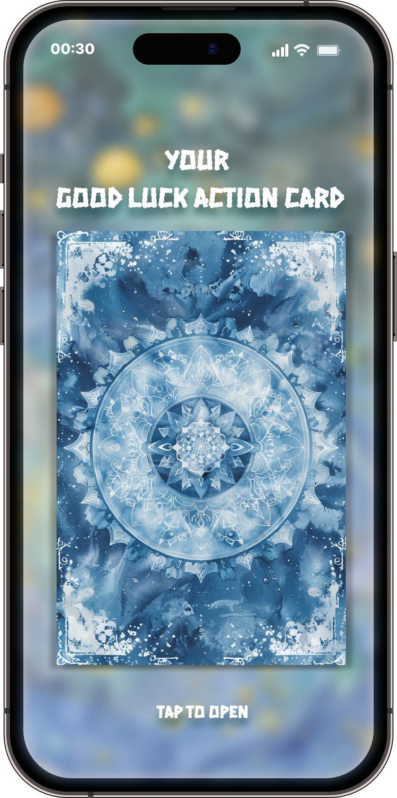
02 / Open the selected card
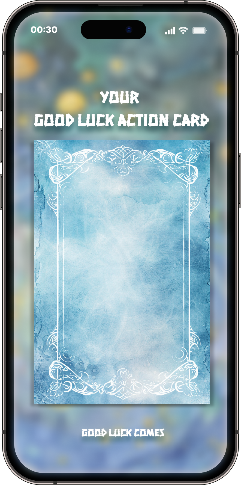
03 / Reveal the card
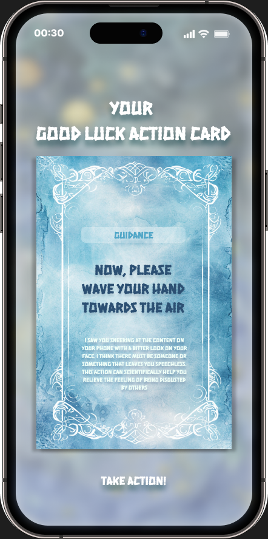
04 / Read the activity suggestion
A suggestion is optional: try it, decline it, redraw or exit. The user can then talk with the little spirit and give feedback on the experience.
Emotion-triggered / 04
Talk to the little spirit. Tell it what helped.
After drawing a card, the illustrated spirit carries the experience into a conversation. Users can express what is on their mind and respond to the suggestion through voice interaction.
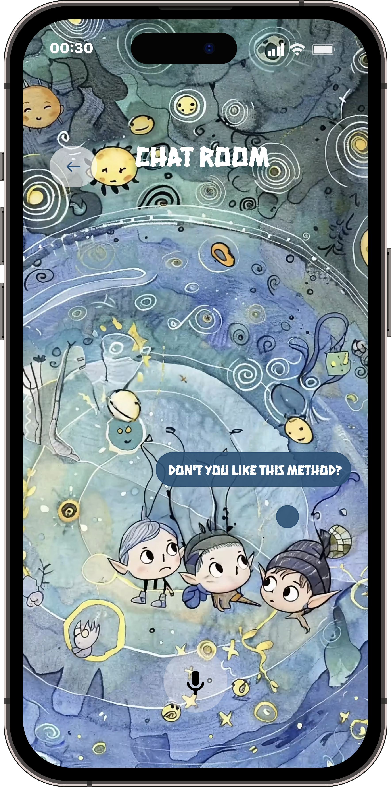
01 / Talk with the card’s little spirit
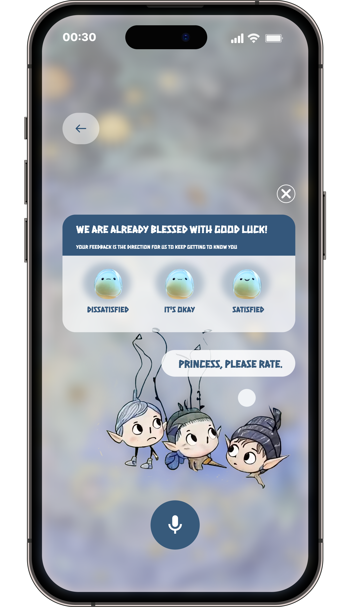
02 / Rate the experience
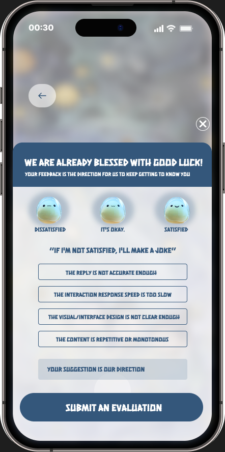
03 / Explain what did not work
The feedback flow offers three satisfaction choices and a detailed form for concerns such as inaccurate responses, slow interaction, unclear visuals or repetitive content. It gives the user a way to explain why the experience did not fit.
Emotion-triggered / 05
See feelings accumulate over time.
The emotion report brings recorded emotional states together into a longer view. Users can return to the report to reflect on how their feelings have appeared across different moments, rather than only seeing the latest check-in.
Session feedback and the accumulated report provide two levels of reflection: how a suggestion felt now, and what the emotional record looks like over time.
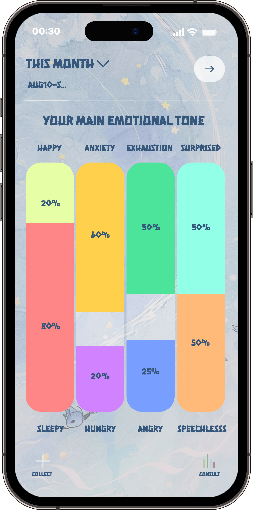
Emotion report · Original interface with illustrative sample data.
Daily mode
No trigger needed. Just a little surprise.
Users can also open EmoBox during an ordinary day and draw a daily card simply to cheer themselves up. This mode begins with their own curiosity, not an emotional alert.
Draw, reveal and decide whether to try the suggestion. The ability to redraw or leave keeps the interaction light and self-directed.
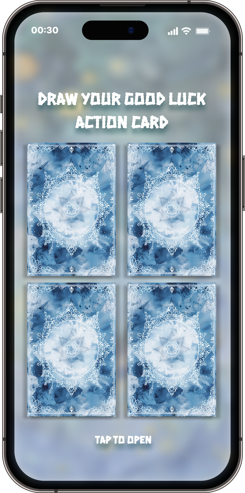
A user-initiated entry point · Also shown in the Daily card video chapter.
Usage demonstration
See the choices in motion.
The edited 2-minute 17-second video demonstrates the mobile experience. Use the chapters to jump directly to a key interaction, or watch the edited sequence.
Connecting facial cues to the companion experience.
The original technology test captures facial-expression recognition across different frames. It shows the sensing exploration behind Momo’s emotional cues and the mobile check-in.